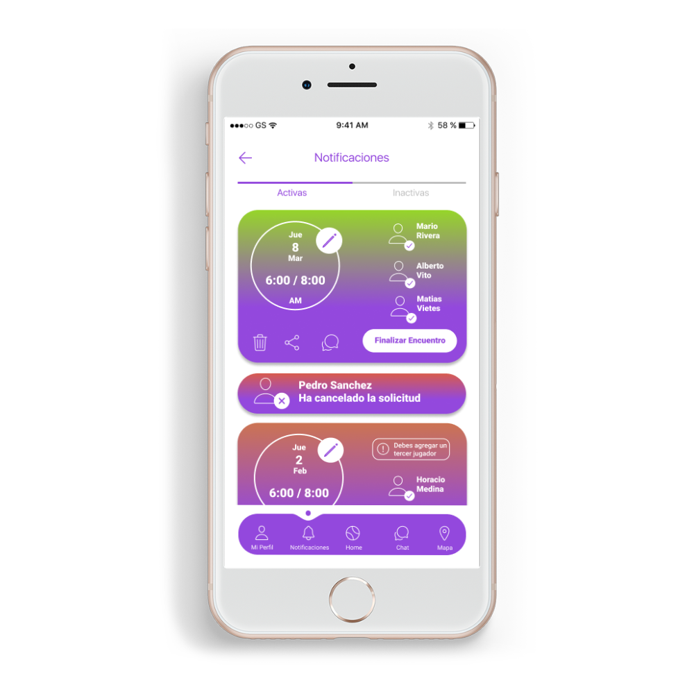
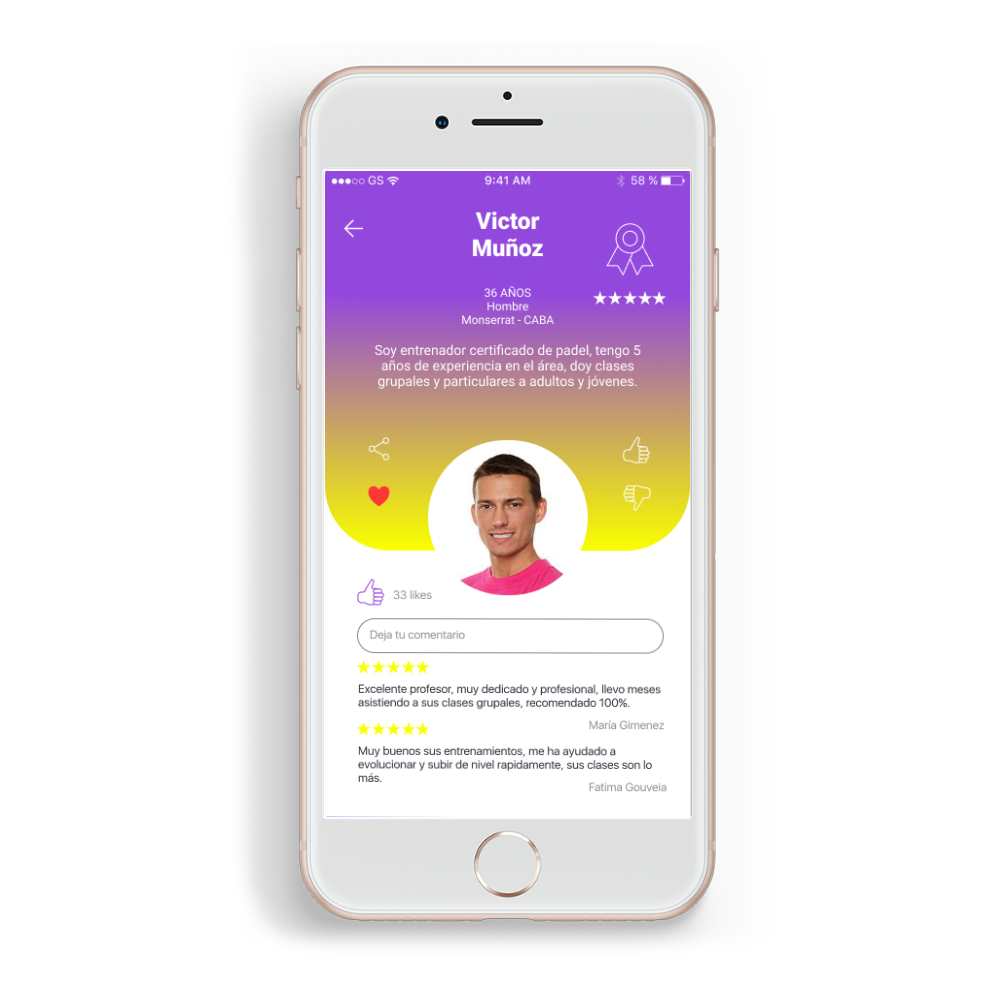

Usar PARTNERS como Jugador
Busca los partidos y eventos
Busca eventos deportivos en tu zona y que se adapten a tu horario. Para ello sólo tienes que establecer tu zona de juego y tus horas favoritas directamente en tu perfil.
Apuntarme a un evento
Busca partidos y eventos. Si un evento te interesa sólo tienes que apuntarte y jugar. El organizador se encargará de alquilar la pista en caso de que sea necesario, que pagaréis entre todos los participantes, in situ u online. Todos los detalles del evento están en su página.
El partido está lleno: lista de espera
Cuando un partido está lleno todavía tienes la posibilidad de apuntarte como reserva, igual hay una baja de última hora. ¿Significa esto que soy el siguiente jugador? No. Simplemente te avisaremos inmediatamente si una plaza queda desierta. Pero como no sabemos si ya tienes otros planes, la convocatoria sigue abierta para todos los usuarios de PARTNERS. Tendrás que ser rápido.
Comunicación: El foro del partido
Intentamos que estéis siempre comunicados, por eso cada evento dispone de su propio foro desde donde los participantes del evento pueden comentar todo lo relacionado con el mismo.
Sobre tus logros
En PARTNERS premiamos a los más jugones. Puedes ver todas tus estadísticas en tu perfil. Si quieres saber más sobre los niveles y medallas, haz click aquí.
PARTNERS en tu móvil
Siempre estarás conectado. Disponemos de Apps para iPhone y Android para que estés siempre conectado con el deporte: Nuevos eventos, cambios de última hora… todo en la palma de tu mano.
Amistad de los jugadores
Al contrario que en otras Redes Sociales, en PARTNERS una solicitud de amistad no significa una exposición de privacidad. Los perfiles en PARTNERS son puramente deportivos. Conecta con otros deportistas para compartir tus aficiones, estar informado de sus eventos y enviar y recibir invitaciones a eventos. Si un usuario te resulta molesto, puedes bloquearlo en cualquier momento desde su perfil.
Notificaciones
Sobre la imagen de tu perfil tienes cuatro iconos de notificaciones para mensajes (estos son privados), solicitudes de amistad, alarmas de eventos -que tú mismo puedes configurar dependiendo de tus intereses- y notificaciones generales como invitaciones a eventos o solicitudes de ingreso a clubes.
Pago online
Puedes realizar el pago online de los eventos que establezcan esta forma de pago. Para ello sólo tienes que recargar tu monedero electrónico y olvidarte de tener que pagar en el campo.
Tu parte de responsabilidad
Cuando te apuntas a un evento adquieres un compromiso. Cada evento tiene unas normas que has de cumplir. No falles a tus compañeros, esto se puede ver sancionado.
Las sanciones pueden ser:
Tarjeta amarilla: Si has llegado tarde, creas conflictos, te has borrado horas antes...
Tarjeta Roja: Has dejado tirado a tus compañeros y no has ido al partido.... Durante los próximos 3 partidos la inscripción en los partidos no será instantánea y tendrá que ser aprobada por el organizador del evento.
Fiabilidad: Es el cálculo de los eventos en los que ha participado y las sanciones recibidas, y nos da una idea de la fiabilidad del jugador
* Todas estas puntuaciones son a juicio y sentido común de los organizadores.
IMPORTANTE, amonestaciones automáticas: Cuando el Organizador establece que los jugadores no pueden borrarse a 24/48 horas del evento, si el jugador desoye la norma será directa y automáticamente amonestado por el sistema. Los Organizadores sin embargo pueden quitar estas sanciones, de manera que se eviten los errores lógicos de esta herramienta automática.
Usar PARTNERS como Entrenador
Antes de organizar un evento
Asegúrate de ser un buen anfitrión, nunca dejes a tus compañeros tirados. Asegúrate de que tienes la pista disponible antes de establecer el lugar y la hora del evento. Piensa en todo lo necesario para su organización y establece un precio justo y solidario para el evento, dividiendo los costes totales entre el número total de participantes.
Las invitaciones
Una vez creado un evento público, todos los usuarios tienen la capacidad de apuntarse al mismo. Puedes enviar invitaciones personalizadas a cada uno de tus amigos y también dejar que cualquier usuario se apunte de forma libre. Si creas el evento desde la página de tu Club, todos los miembros del mismo será informados.
Tipos de eventos
Existen eventos de tipo público y privado, así como eventos de inscripción libre o no. Para más información consulta nuestra sección de Preguntas Frecuentes.
¿Qué ocurre si el evento no se llena?
El evento se puede cancelar en cualquier momento. Si has adquirido una deuda con una Instalación deportiva, sólo tú como organizador eres responsable de la misma. Procura establecer un número de participantes fácil de conseguir.
Eres responsable del evento
Esto no quiere decir que te tengas que encargar de p.e. llevar un balón, pero sí de coordinar al grupo para que alguien lo lleve. La organización de camisetas por colores, que la gente llegue puntual, mantener a todo el mundo informado o cancelar un evento a tiempo son tu responsabilidad.

